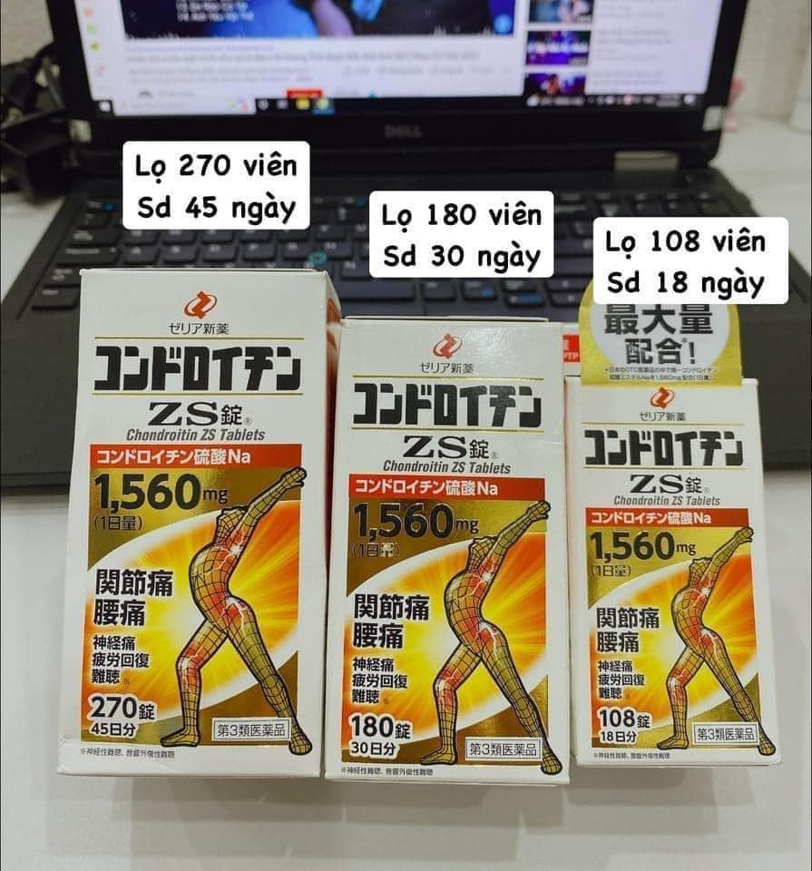
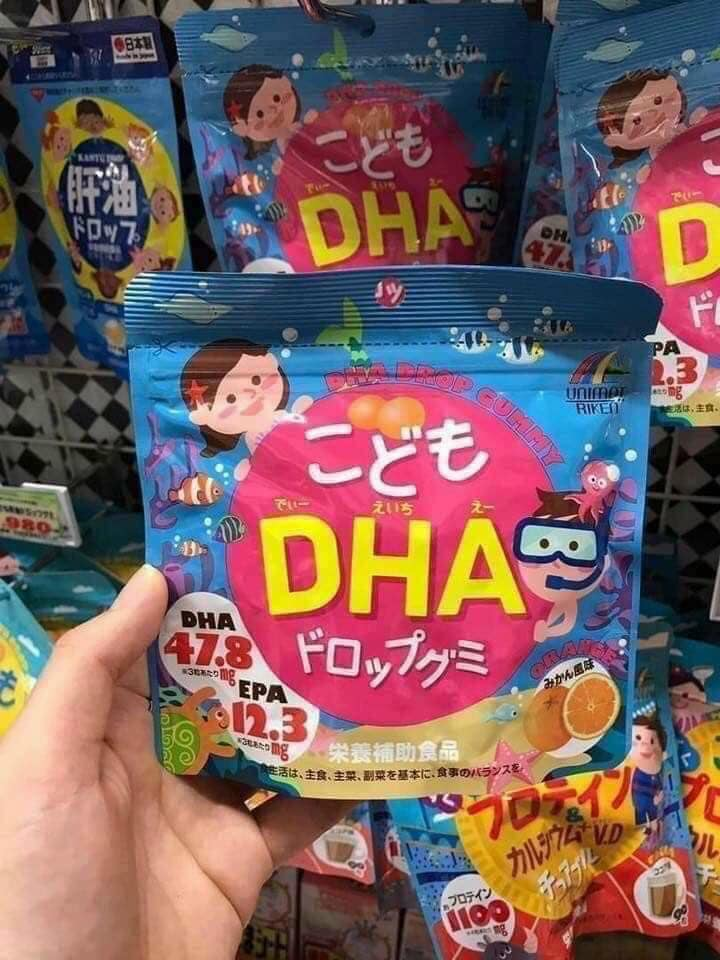
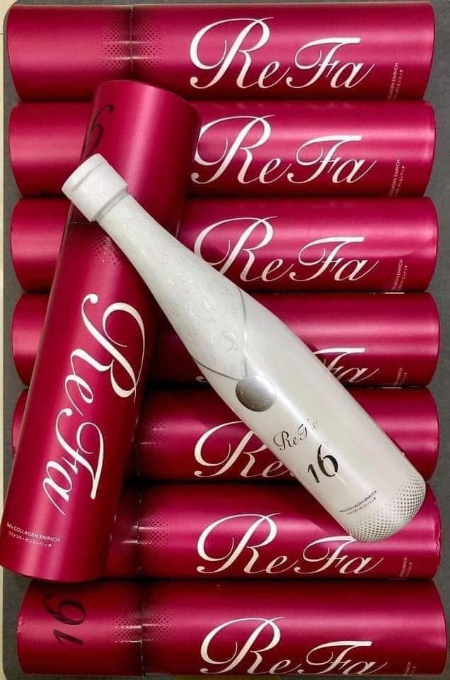
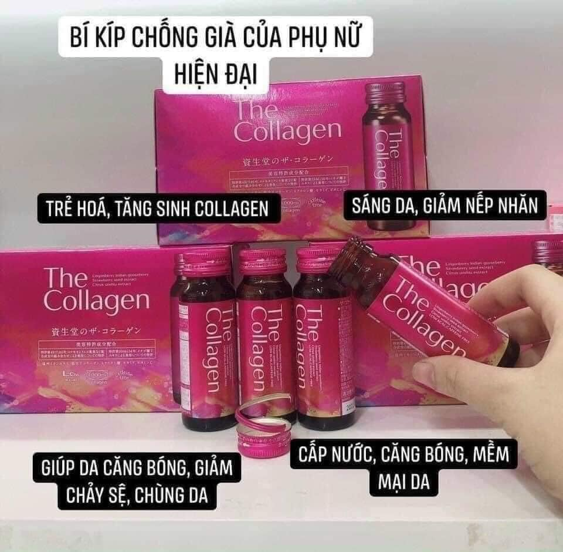

Xương nhện ,108v.180v,270 viên của Nhật Bản
THUỐC XƯƠNG NHỆN ZS - MÓN QUÀ CHO NGƯỜI BỊ ĐAU KHỚP
Bổ xương khớp ZS giúp ức chế các men phá hủy sụn và tăng cường tái tạo sụn.
Chondroitin zs tablets có khả năng ức chế và giảm quá trình thoái hóa khớp.
ZS chondroitin hỗ trợ cho việc gia tăng độ nhớt của hoạt dịch ở các đầu khớp.
Bổ xương khớp Nhật Bản ZS chondroitin giúp cải thiện khả năng hấp thụ canxi vào xương, giúp xương chắc khỏe.
Thành phẩn MSM trong viên bổ xương khớp ZS chondroitin 270 viên có khả năng giảm và mất hẳn các cơn đau xương khớp.
Những người nên sử dụng:
Người mắc bệnh Gout.
Người gặp các chấn thương thể thao liên quan đến dây chằng, sụn, gân.
Người bị loãng xương.
Người mắc bệnh về xương khớp như: viêm khớp cấp và mãn tín, hư khớp hang, thoái hóa đốt sống cổ.
Liều dùng thuốc bổ khớp Zs của Nhật
Ngày uống hai lần / mỗi lần 3 viên thuốc xương nhện của Nhật.
1hộp cho 45 ngày sử dụng ( 270 viên)

Kẹo bổ sung DHA cho trẻ
KẸO THÔNG MINH- TĂNG CƯỜNG TRÍ NHỚ cho bé!!!
𝑮𝒊𝒖́𝒑 𝒃𝒆́ 𝒕𝒉𝒐̂𝒏𝒈 𝒎𝒊𝒏𝒉 𝒗𝒂̀ 𝒏𝒉𝒐̛́ 𝒍𝒂̂𝒖
Các mẹ muốn bổ sung DHA cho bé nhưng lại ngại tanh, ngại bé k muốn uống...
Bổ sung DHAcho bé quá dễ dàng với viên kẹo bổ sung DHA cho bé của Nhật đây ah:) ngon lắm nha các mẹ
Kẹo DHA Nhật Unimat - 𝘝𝘐̣ Đ𝘈̀𝘖 - TĂNG CƯỜNG SỨC ĐỀ KHÁNG CHO BÉ 1 tuổi rưỡi trở lên, ăn được là dùng được .
Kẹo DHA và Vitamin cho bé Unimatriken chiết xuất từ dầu gan cá tuyết được bào chế dạng kẹo dẻo và có hương vị sữa pha trộn với trái cây nên rất thơm ngon và kích thích vị giác của bé yêu.
Vị chua ngọt ngon lắm lắm lun nha!
Công dụng :
Bổ sung DHA giúp tăng cường hoạt động não bộ cho bé, học tiếp thu nhanh.
Cải thiện trí nhớ, khả năng tư duy của trẻ.
Tăng cường thị lực cho trẻ giúp sáng mắt.
Cải thiện tuần hoàn máu.
Các mẹ mua ib em tư vấn thêm nhé.

Refa colagen 16 được khen ngợi khắp mọi nơi luôn ạ. Các nàng nhớ bổ sung colagen sau tuổi 25 để có 1 làn da ko tì vết nha!
COLLAGEN REFA 16 siêu VIP Nhật Bản
Là dòng colagen_siêu_cấp_nhất từ trước đến nay , được các ngôi sao và các chị em có tiền săn lùng vì hiệu quả vô cùng (đắt sắt ra miếng đó ạ )
Thề là hiệu quả đến bất ngờcollagen luôn!
Collagen loại thường cũng hàm lượng giỏi lắm 10.000 là cao nhất riêng REFA_16 này hàm_lượng_collagen_lên_đến_16000 luôn
uống xong da chỉ có căng bóng. SIÊU chống lão hóa luôn. Mà đó chỉ là vấn đề nhỏ, vấn đề lớn là làm TRẮNG nhanh vô địch, trắng toàn thân
Refa Collagen Enricher được sử dụng cho mọi lứa tuổi từ 25 trở lên và đặc biệt sản phẩm dành cho những người đang có nhiều nếp nhăn, lão hóa, da sần sùi và chảy xệ.
Tác dụng của Refa Collagen Enricher:
Không tác dụng phụ , không bị tăng cân
Siêu làm TRẮNG da an toàn & cấp tốc
Đặc biệt sinh ra là để cho các nàng da SẠM, NÁM, TÀN NHANG,..
Tái tạo và phục hồi cấu trúc tế bào, lấy lại làn da trắng nõn mịn màng cho những nàng trên 25 tuổi
Hiệu quả ngay tháng đầu tiên tới 30%
Hỗ trợ Nhả nắng, giảm nám, thâm mụn
Chống lão hoá, trắng da, mịn màng
Phục hồi làn da bị chảy xệ, sử dụng rất tốt cho phụ nữ sau sinh
1 chai 480ml uống được 1 tháng
Vì Refa 16 Collagen Enrich 480ml dạng nướcrất dễ dàng hấp thu vào cơ thể

THE COLAGEN SHISEIDO
Đừng chăm chăm bôi kem bên ngoài da, phải kết hợp bên trong cơ thể nữa nhé các nàng.
Colagen là thành phần không thể thiếu giúp làn da có sự đàn hồi tốt và luôn tươi trẻ . Nhưng theo thời gian lượng colagen sẽ giảm dần tạo nên những nếp nhăn làm mất vẻ hồng hào mịn màng.
Colagen được làm từ nguyên liệu thiên nhiên giúp trẻ hoá làn da giảm các vết chai sạm , nám và tàn nhang cho làn da luôn tươi trẻ làm chậm quá trình lão hoá da . Colagen dạng nước giúp cơ thể hấp thu nhanh nhất và hiệu quả nhất .
Sản phẩm cung cấp lượng colagen vừa đủ phù hợp cho phụ nữ từ 25 tuổi . Việc sử dụng colagen đúng cách sẽ cho ta làn da luôn tươi trẻ , hồng hào , mịn màng tạo sự tự tin cho phái đẹp .